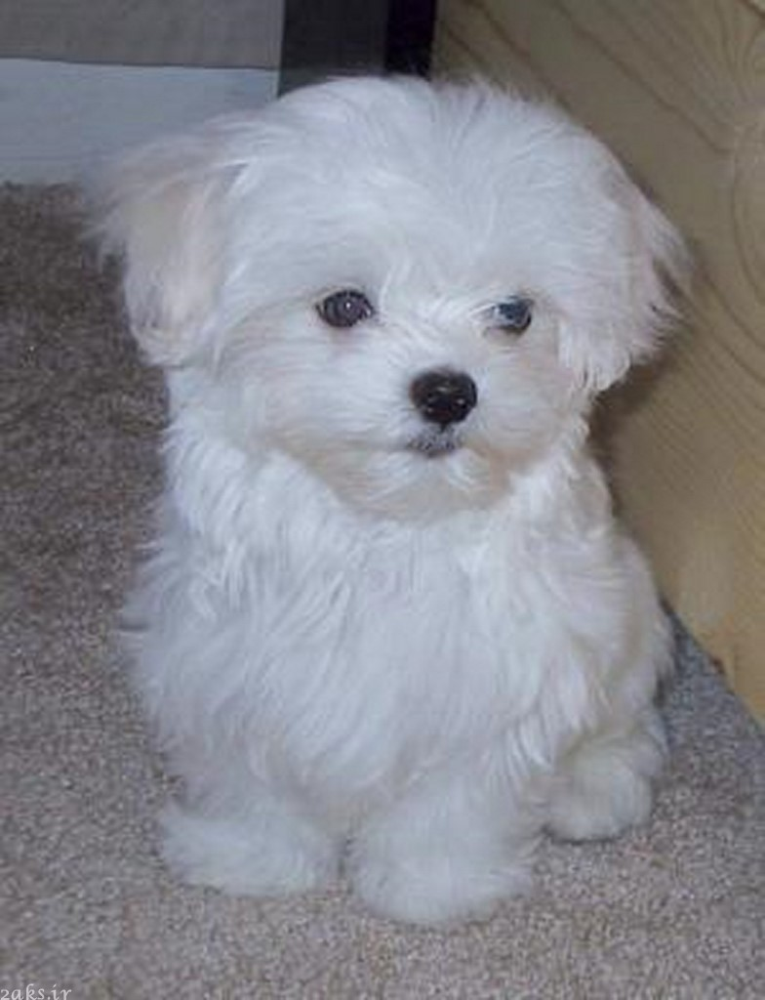
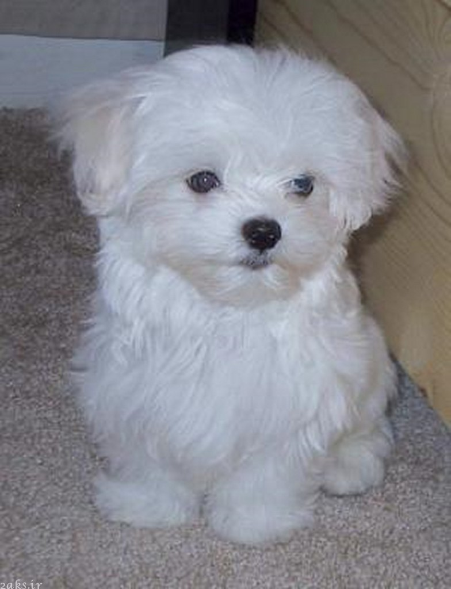

نژاد هاسکی اوایل دهه نود میلادی به آلاسکا برده شد. هاسکی یک اسم کلی برای تعدادی از نژادهاست که به عنوان سگهای سورتمهکش مورد استفاده قرار میگیرند. این سگ در واقع در مناطق شمالی کره زمین مورد استفاده قرار میگرفت؛ اما حالا به عنوان سگ دستآموز نیز وارد منازل مردم شدهاند.
در آن زمان از هاسکی سیبریایی و ساموید به عنوان تنها سگ های سورتمهکش استفاده میشد و با کمک سگهای هاسکی مشکلات عدیدهای از ساکنان برطرف میشد از جمله نقل و انتقال انسانها، انتقال بار و انتقال نامههای فوری.
سگ های هاسکی از دهه ۱۹۳۰ در ارتش آمریکا در عملیاتی که در مناطق سردسیر انجام میگیرد، مورد بهره برداری قرار میگیرند که عمدهترین عملکرد هاسکی تجسس برای یافتن گم شدگان است.
هاسکی سیبریایی (به زبان روسی سگ سیبریایی) سگی با ابعاد متوسط (وزن نر ۲۰ تا ۲۷ کیلوگرم، وزن ماده ۱۶ تا ۲۳ کیلوگرم، ارتفاع نر ۵۳ تا ۶۰ سانتیمتر و ارتفاع ماده ۵۱ تا ۵۶ سانتیمتر)، با پوشش خارجی بسیار فشرده، به عنوان یک سگ کار که از شرق سیبری آمده اند، شناخته میشوند که از نظر ژنتیکی دنباله سگ های نژاد اشپیتز میباشند.